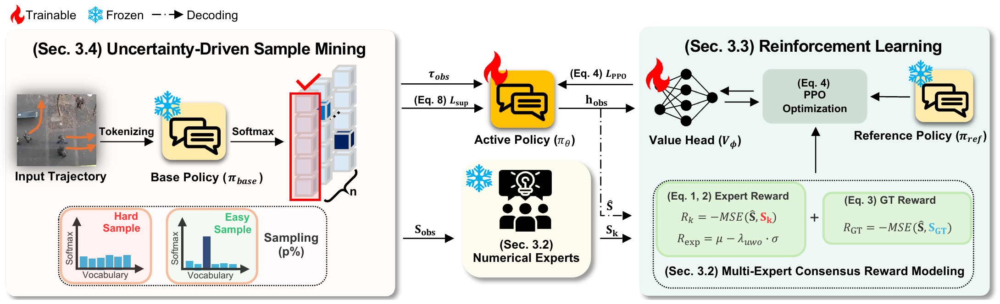

MoRE (Mixture of Reward Experts) refines a language-based trajectory predictor with rewards from five frozen numerical models.
Language-based trajectory predictors represent coordinates as discrete tokens and learn auxiliary tasks such as destination and group reasoning. This formulation enables the model to capture behavioral intent and social context beyond coordinate dynamics alone. However, token-level objectives provide only indirect guidance for continuous coordinate-space dynamics. To address this limitation, we introduce MoRE (Mixture Of Reward Experts), a refinement framework that transfers numerical forecasting priors into a pretrained language-based predictor through reinforcement learning. Five frozen numerical predictors provide complementary coordinate-level knowledge of motion and interactions. Their predictions are converted into expert rewards and combined through an uncertainty-weighted consensus that penalizes disagreement. A ground-truth reward anchors the prediction to the target trajectory. To focus refinement on difficult cases, MoRE refines the policy using the top 1% of training samples ranked by predictive entropy. Expert predictions are computed once and cached before PPO training, so the experts are not run during policy updates or inference. In this way, MoRE combines the contextual modeling of the language-based predictor with coordinate-level feedback from numerical experts. On ETH-UCY, MoRE reduces ADE from 0.22 to 0.20 m and FDE from 0.32 to 0.29 m. Relative to the base policy, ADE decreases by 17.9% on SDD and 12.7% on NBA. On ETH-UCY, MoRE also reduces collision rates and better matches ground-truth pedestrian spacing, without increasing measured inference memory or latency.
MoRE builds on a pretrained language-based forecasting architecture and refines it using rewards from numerical experts.

The frozen base policy scores each training sample by the entropy of its token distribution. Refinement focuses on the top 1% most uncertain samples.
Five frozen predictors (Social-STGCNN, DMRGCN, GP-Graph, SingularTrajectory, Expert-Trajectory) predict the selected samples once; the predictions are cached.
Each expert scores a decoded path by Rk = −MSE(Ŝ, Sk). Uncertainty-weighted consensus penalizes expert disagreement, and a ground-truth reward anchors the prediction.
The policy is refined with PPO, interleaved with supervised learning. The experts are not needed at inference.
Best-of-20 ADE / FDE: ETH-UCY in meters, SDD and GCS in pixels. Selected rows from Table 1 of the paper; lower is better.
| Model | ETH | HOTEL | UNIV | ZARA1 | ZARA2 | AVG | SDD | GCS |
|---|---|---|---|---|---|---|---|---|
| Numerical | ||||||||
| GP-Graph | 0.43/0.63 | 0.18/0.30 | 0.24/0.42 | 0.17/0.31 | 0.15/0.29 | 0.23/0.39 | 9.1/13.8 | 7.8/13.7 |
| MART | 0.35/0.47 | 0.14/0.22 | 0.25/0.45 | 0.17/0.29 | 0.13/0.22 | 0.21/0.33 | 7.4/11.8 | 10.6/14.1 |
| SingularTrajectory | 0.35/0.42 | 0.13/0.19 | 0.25/0.44 | 0.19/0.32 | 0.15/0.25 | 0.21/0.32 | 7.58/12.1 | 7.9/13.3 |
| MoFlow | 0.40/0.57 | 0.11/0.17 | 0.23/0.39 | 0.15/0.26 | 0.12/0.22 | 0.20/0.32 | 7.5/12.0 | 9.1/11.6 |
| Language-based | ||||||||
| LMTraj-SUP | 0.41/0.50 | 0.12/0.16 | 0.22/0.34 | 0.20/0.32 | 0.17/0.27 | 0.22/0.32 | 7.8/10.1 | 7.1/9.6 |
| W2W | 0.35/0.41 | 0.12/0.15 | 0.20/0.32 | 0.19/0.29 | 0.17/0.26 | 0.21/0.29 | 7.4/10.1 | – |
| MoRE (Ours) | 0.36/0.42 | 0.11/0.14 | 0.21/0.32 | 0.18/0.28 | 0.17/0.26 | 0.20/0.29 | 6.4/9.5 | 6.8/8.5 |
Numerical models vs. LMTraj vs. MoRE. Pick a dataset, a scene, a camera and a model. Each clip replays the recorded crowd, pauses at the prediction moment while the sampled futures are drawn, lets the future unfold, and then highlights the sample closest to the ground truth. ETH-UCY ZARA and SDD Hyang are replayed in 3D; ETH, HOTEL and UNIV are shown on the real-world videos.
@article{lee2026more,
title = {Revisiting Numerical Forecasting Models for Language-Based Trajectory Prediction},
author = {Lee, JunGyu and Bae, Inhwan and Jeon, Hae-Gon},
journal = {arXiv preprint},
year = {2026}
}